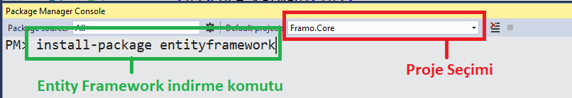

Projelerin geliştirilebilir, yönetilebilir ve erişilebilir olması amacıyla kullanılan mimari modellerdir. Görevleri tek bir proje altında oluşturulan kod sistemlerini parçalayarak yönetilebilirliği arttırmaktır.
Bu mimarinin bize sağladığı avantajlar;
Bir çok katmanlı mimari modeli bulunmasına karşılık projemizde tercih ettiğimiz model Onion Architecture (Soğan Mimarisi) modelidir. Bu modelde katmanlar birbirine bağlı olarak çalışır fakat farklı görevlerde bulunan sınıflar ayrıştırılır.
Bu model oluşturulan katmanların belli bir hiyerarşiye sahip olmadan birbirlerini referans olarak çalışmasını sağlayan modeldir. Bu modeli en temel anlamıyla uygulamak için aşağıdaki katmanları oluşturmanız gerekmektedir.
Katmanları oluşturmak için aşağıdaki adımları izleyin.
- Solution Explorer
- Framo Solution
- Sağ Tık
- New Project
- Class Library Seçin
- Projeye bir isim verin (isimler aşağıda verilmiştir)
- OK butonuna basarak projeyi oluşturun.
Bu tarz çok katmanlı mimari modellerinin çalışabilmesi için oluşturulan katmanların birbirine bağlanması gerekmektedir. Bu modellerin amacı parçaların ayrı ayrı tasarlanarak bir bütünü oluşturmasını sağlamaktır.
Entity Framework Yüklemek : Package Manager Console üzerinde üstten komutun hangi proje için çalıştırılacağını seçin > install-package entityframework komutunu girin..

Bu katman içerisinde en temel yapı olmasından dolayı en çekirdekteki referansları almak durumundadır.
Bu katman içerisinde Core katmanındaki taban sınıflardan ve interfacelerden yararlanılarak veritabanı sınıflarımız ve bu sınıfların map dosyaları oluşturulur.
Projemizin can damarıdır. Tüm işlemler, alt yapı ve katmanlı mimari üzerinde uygulanacak design pattern yapıları bu katmanda barınır. Daha basit anlamıyla iş katmanıdır.
Bu katman kullanıcıyla iletişime geçmesi için kullanılır. Tüm referansların verilme sebebi bu proje derlenip yayınlamaya hazır hale getirildiğinde kullanılacak dll'lerin bu katmandan alınması amaçlanır.
Entity Framework versiyonlarının aynı olması dikkat edilmesi gereken bir konudur.
Katmanlar içerisinde hangi işlemlerin hangi sıralar ile yapıldığını aşağıdaki başlıklardan takip edebilirsiniz.
Bu katman içerisinde çekirdek olarak kullanılacak sınıflar ve interfaceler oluşturulur. Bu işlemler için aşağıdaki klasörleri oluşturarak işlemlerimize başlayabiliriz.